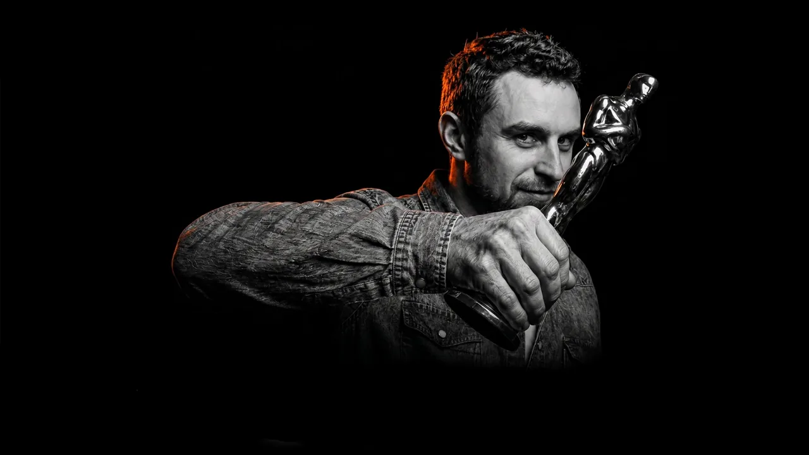
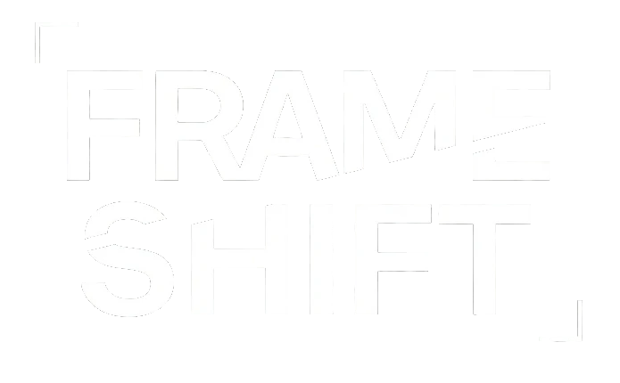
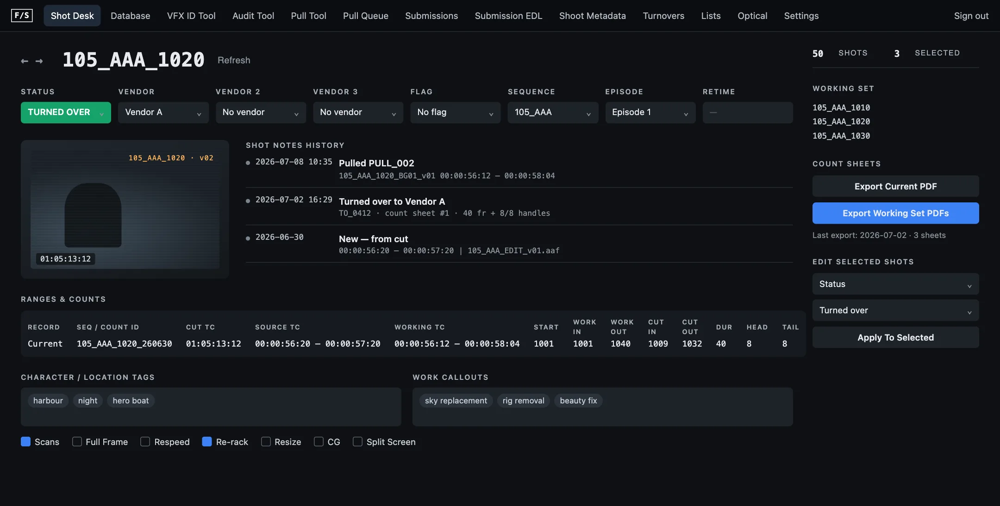
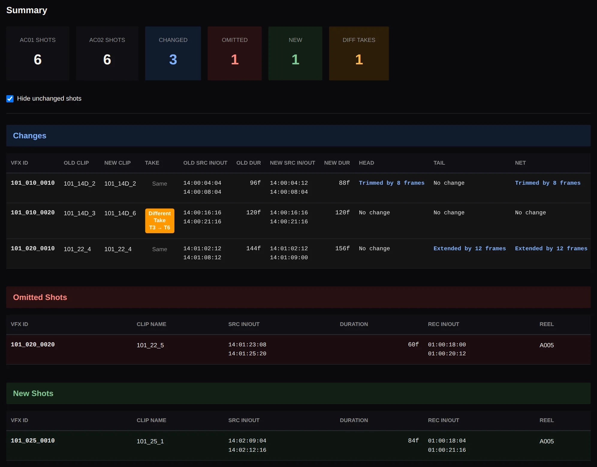

Avatar
Cameron's first film since Titanic. When I heard Framestore had it, I told my boss I wanted in. A year of sixteen-hour days, running the sessions where the supervisor reviewed every artist's work and presenting finished shots to production.

VFX EDITOR · WORKFLOW BUILDER · LONDON
VFX editorial on Avatar, Gravity, Harry Potter, Black Mirror and The Rings of Power. I build the tools that take the manual work out of editorial, starting with FRAME/SHIFT.
CREDITS ON OSCAR- & BAFTA-WINNING PRODUCTIONS · IMDB ↗
Six productions from a career in feature and episodic VFX.
Cameron's first film since Titanic. When I heard Framestore had it, I told my boss I wanted in. A year of sixteen-hour days, running the sessions where the supervisor reviewed every artist's work and presenting finished shots to production.

The final chapter of the saga, and a BAFTA winner for Part 2. I ran VFX editorial: gathering every asset, running the dailies, keeping editorial and the director in sync. The only person who knew the project structure from the earlier films.

An Academy Award winner, almost entirely visual effects. It took so long that Clooney's MySpace line had to be rewritten, because Facebook overtook it mid-production. Four years of shots, tracked frame by frame.

Ridley Scott's return to the franchise. Facehuggers and chestbursters are on screen for split seconds, enough to define a franchise's terror. I've been an Alien fan since childhood, and I made sure those cuts landed.

Charlie Brooker's anthology on the cost of new technology. He demands effects you never notice, which is harder to pull off than spectacle.

Among the largest VFX undertakings in episodic television. Turnovers, tracking, versioning and conform at a scale where nothing can be done by hand.
ALSO: The Iris Affair · KAOS · The Witcher: Blood Origin · Dracula · The Dark Crystal · A Discovery of Witches · Brave New World · Guardians of the Galaxy Vol. 2 · Paddington 1–2 · Everest · Jupiter Ascending · Geostorm · The Golden Compass
I own the editorial spine of a show — the system that moves thousands of shots from artists to screen. EDLs, turnovers, versioning, conform, under deadline pressure that never lets up. My job has always been the same: make the invisible work. After years of doing it by hand, I started building the tools to do it better.


Every show I've worked on ran its VFX editorial out of spreadsheets — fragile, manual, rebuilt from scratch each time. FRAME/SHIFT is the alternative: a database built around how shows actually move, where the cut itself drives the pipeline. Shot tracking, turnovers and versioning derived from the EDL, not retyped into cells.
I'm building it the only way I'd trust: inside a live production, on real data, an hour a night. Not a startup. Infrastructure.
THE CUT-DERIVED PIPELINE — the edit is the source of truth; everything else follows from it.
→ Visit FRAME/SHIFT ↗Standalone tools from the cutting room floor — EDL parsing, turnover checks, the small automations that save an afternoon. I share them as I build them. Some will be absorbed into FRAME/SHIFT; the rest stay free and practical.
EDL AUDIT — drop in two cuts, get every trim, take change, omit and new shot in seconds.
→ Explore the tools ↗
Ten tools in ten days — a public sprint of small, generative and practical experiments. Halftone studios, EDL checkers, even an AI darts coach. Built fast, shipped daily, kept live.
→ Enter the Lab ↗Taking on VFX editorial for film and series. Building FRAME/SHIFT on real production data. Writing about editorial systems on LinkedIn.
Elsewhere: Mr. Lobster — proof I ship AI products outside film. → mrlobster.co.uk ↗
I was the kid who stayed through the credits, wondering who all those people were.
Years later, my name has scrolled past on Avatar, Gravity, Harry Potter, Black Mirror and The Rings of Power.
Somewhere along the way I realised the job was never really about the shots. It was about the system that moves them. So now I build the system — with the same instinct, and much better tools.
Two reasons people get in touch.